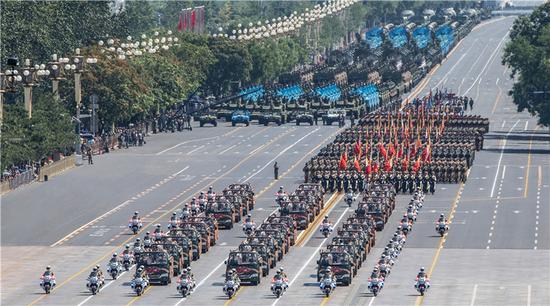

asdfasdf 东奔西走 顶替 顶替 枯
党的十八大以来，短短5年，在我军90年光辉历程中如此厚重、极不平凡——党在新形势下的强军目标鲜明确立，政治建军深入推进，练兵备战紧锣密鼓，改革攻坚大刀阔斧，正风肃纪雷霆万钧……习主席领导和指引人民军队全面重塑、浴火重生，在强军兴军征程上迈出历史性步伐。
明月出天山，苍茫云海间。长风几万里，吹度玉门关。汉下白登道，胡窥青海湾。由来征战地，不见有人还。 戍客望边色，思归多苦颜。高楼当此夜，叹息未应闲。明月出天山，苍茫云海间。长风几万里，吹度玉门关。汉下白登道，胡窥青海湾。由来征战地，不见有人还。 戍客望边色，思归多苦颜。高楼当此夜，叹息未应闲。明月出天山，苍茫云海间。长风几万里，吹度玉门关。汉下白登道，胡窥青海湾。由来征战地，不见有人还。 戍客望边色，思归多苦颜。高楼当此夜，叹息未应闲。
关山重重的新长征，离不开登高望远的领路人。作为党中央的核心、全党的核心、人民军队最高统帅，习主席以马克思主义政治家的政治智慧、理论勇气、卓越才能和驾驭全局能力，大气魄治党治国治军，大视野运筹国内国际大局，大手笔推动改革发展稳定，党、国家和军队面貌发生巨大变化，赢得人民群众和全军官兵发自内心的爱戴。
// /*****/ 